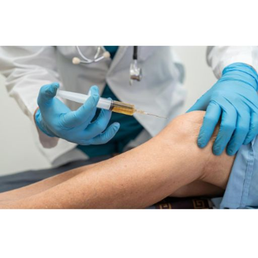
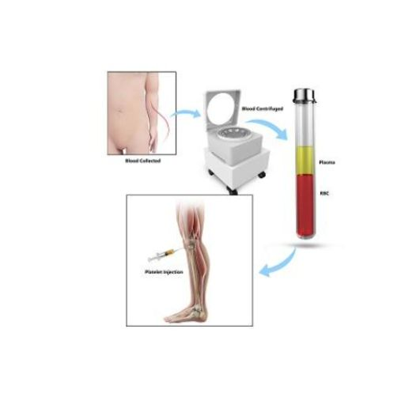

Home
Home
Medicina Deportiva y Regenerativa
La práctica deportiva, tanto a nivel profesional como recreativo, expone al sistema musculoesquelético a cargas repetitivas, sobreuso y traumas agudos. En nuestra unidad, abordamos las lesiones deportivas desde un enfoque multidisciplinario, basado en evidencia científica y con recursos terapéuticos de última generación, integrando la medicina regenerativa y la ortobiología como herramientas de vanguardia.
Corticoides intraarticulares
Utilizados en procesos inflamatorios agudos y subagudos. Poseen una potente acción antiinflamatoria sobre sinovitis, bursitis o reagudizaciones artrósicas, aunque su uso repetido puede afectar negativamente al cartílago. Indicado en: sinovitis, artrosis dolorosa, tendinopatías reactivas.
Infiltraciones Biológicas
En la última década, las infiltraciones han evolucionado desde simples procedimientos sintomáticos a terapias con efectos biológicos medibles, capaces de modular procesos inflamatorios, estimular la regeneración tisular y ralentizar la progresión de enfermedades degenerativas como la artrosis. En nuestra unidad, aplicamos esta terapéutica con un enfoque personalizado y científicamente validado.

Ácido Hialurónico: más que un lubricante
El ácido hialurónico (AH) es un polisacárido natural presente en el líquido sinovial que actúa como amortiguador y lubricante articular. En condiciones normales, contribuye al deslizamiento suave de las superficies articulares, modula la inflamación y protege el cartílago. En contextos patológicos como la artrosis o el síndrome de fricción femoropatelar, la concentración y viscosidad del AH se reducen, favoreciendo el roce, la inflamación y la degradación articular. Las infiltraciones intraarticulares de AH (viscosuplementación) reponen esta función y han demostrado en múltiples estudios: ✅ Reducción del dolor articular (efecto comparable al de AINEs, pero sin sus efectos secundarios sistémicos). ✅ Mejora de la función y la movilidad articular (especialmente en rodilla, tobillo y hombro). ✅ Disminución de la progresión degenerativa en artrosis incipiente. ✅ Potenciación del efecto cuando se combina con PRP en tratamientos secuenciales. Existen diversas formulaciones de AH, con diferencias en: Peso molecular (bajo, medio o alto): el AH de alto peso molecular se asocia con mayor duración del efecto. Número de infiltraciones (monodosis vs. series de 3 a 5). Efecto viscoinductor: más allá de lubricar, estimulan la producción endógena de ácido hialurónico por las células sinoviales. 📌 Indicaciones clínicas más frecuentes: Artrosis leve a moderada de rodilla, cadera, tobillo, hombro. Síndrome femoropatelar en jóvenes deportistas. Lesiones condrales aisladas (grado I–II). Artropatía postraumática. 📌 Ventajas: Excelente perfil de seguridad. Procedimiento ambulatorio y mínimamente invasivo. Repetible cada 6–12 meses según evolución clínica. ⚠️ Contraindicaciones: procesos infecciosos articulares activos, alergia conocida al producto (muy poco frecuente), hemartros no resueltos.
PRP – Plasma Rico en Plaquetas: regeneración desde tu propia sangre
El Plasma Rico en Plaquetas (PRP) representa una de las herramientas más prometedoras en el campo de la medicina regenerativa aplicada a lesiones deportivas y degenerativas. Se obtiene mediante una extracción de sangre del propio paciente y un proceso de centrifugación que permite concentrar las plaquetas y separar los factores de crecimiento bioactivos. Las plaquetas no sólo participan en la coagulación: su mayor valor está en que liberan factores tróficos como: PDGF (factor de crecimiento derivado de plaquetas) TGF-β (factor transformante del crecimiento beta) VEGF (factor de crecimiento endotelial vascular) IGF-1 (factor de crecimiento insulínico) Estas moléculas estimulan la reparación celular, la angiogénesis controlada, la síntesis de colágeno y la resolución ordenada de la inflamación. 📚 Evidencia científica: Múltiples estudios han demostrado la eficacia del PRP en el manejo de tendinopatías crónicas resistentes (epicondilitis, rotuliana, aquilea), con tasas de mejoría superiores al 70% en pacientes adecuadamente seleccionados. En lesiones musculares agudas (grado II), su aplicación precoz ha demostrado acortar los tiempos de retorno al deporte. En artrosis incipiente de rodilla, el PRP ha mostrado mejoría funcional sostenida hasta 12 meses, y ralentización de la degeneración del cartílago en modelos experimentales. 🧪 Indicaciones clínicas: Epicondilitis lateral (codo de tenista) Tendinopatía rotuliana crónica (rodilla del saltador) Tendón de Aquiles (tendinosis no insercional) Lesiones musculares grado II Artrosis grado I–II de rodilla, tobillo, hombro ⚙️ Cómo se realiza: Extracción de 10–20 ml de sangre venosa. Centrifugado en condiciones estériles para separar las fracciones plaquetarias. Infiltración en la zona lesionada. Reposo relativo las primeras 24–48h. Progresiva reintroducción funcional con seguimiento clínico y fisioterapéutico.

✅ Ventajas del PRP: Producto autólogo: no hay riesgo de rechazo ni transmisión de enfermedades. Evita o retrasa la necesidad de cirugía en muchos casos. Mejora la calidad de vida en pacientes activos. Potencia los programas de recuperación funcional. ⚠️ Contraindicaciones absolutas y relativas: Infecciones sistémicas o locales Trastornos de la coagulación no controlados Pacientes anticoagulados o con anemia severa Enfermedades autoinmunes activasNuestra filosofía: medicina regenerativa responsable
En nuestra práctica clínica no utilizamos estos tratamientos como soluciones genéricas o de moda. Realizamos una evaluación personalizada, con diagnóstico preciso, uso selectivo de técnicas ortobiológicas, y un programa de seguimiento que incluye: Monitorización funcional. Ecografía comparativa seriada. Guía de ejercicio terapéutico y carga progresiva. Combinamos ciencia, ética y experiencia para ofrecer terapias regenerativas con indicación médica clara, ejecución segura y seguimiento riguroso.
¿Por qué acudir a mí para tus infiltraciones?
En un mundo donde las infiltraciones se ofrecen en muchos centros como un procedimiento rutinario, mi enfoque es diferente: basado en el conocimiento médico, la experiencia quirúrgica y una indicación precisa y personalizada.
Experiencia clínica real
Soy cirujano ortopédico con formación y trayectoria internacional. Mi experiencia no se basa en protocolos genéricos, sino en el tratamiento real de pacientes con lesiones deportivas, artrosis, tendinopatías y dolor crónico, desde el quirófano hasta la recuperación funcional.
Tratamientos con sentido médico
No todas las infiltraciones son iguales. Selecciono cuidadosamente el tratamiento más adecuado para ti: Ácido hialurónico para mejorar la función articular y aliviar el dolor en artrosis incipiente. Plasma rico en plaquetas (PRP) para estimular la regeneración en tendones, músculos o cartílago. Corticoides cuando hay inflamación aguda que impide el movimiento. Cada decisión está guiada por tu diagnóstico, tu nivel de actividad y tus objetivos personales. 🤝 Atención responsable Me involucro en cada paso: desde la evaluación inicial hasta el seguimiento posterior. Porque una infiltración bien indicada puede cambiar tu evolución… y una mal indicada puede empeorarla.